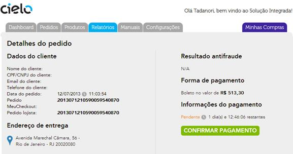
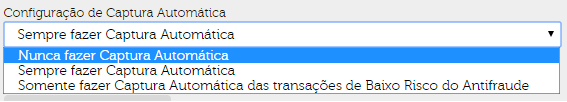
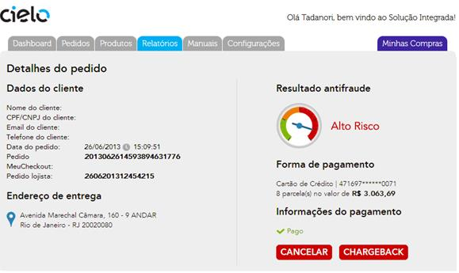
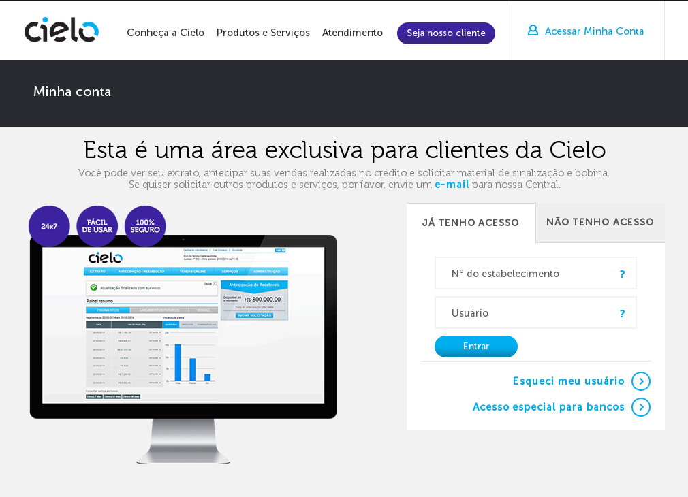

Na página principal da Cielo é possível acessar o Backoffice Cielo. Para isso, basta clicar em Acessar Minha Conta:
Ao clicar em Acessar Minha Conta, uma nova tela se abrirá onde será possível se logar, se cadastrar ou fazer o login voltado para a Consulta a um determinado pedido.

No menu da sua área restrita, clique em “Vendas Online” e em seguida “Checkout Cielo”. Pronto! A partir daí você poderá gerenciar seus pedidos, capturar ou consultar suas vendas, realizar configurações técnicas, mandar e-mail para o suporte e muito mais!

O Backoffice do Checkout Cielo é formado por 6 paginas com opções diferentes de configuração. Elas são:
Pagina inicial onde são apresentadas informações sobre a sua conta e sobre o volume e tipo de transações que sua loja vem realizando vio Checkout Cielo.
Nessa tela você encontra dois tipos de informações:

Nessa pagina fica contida toda a listagem de transações realizadas por um determinado periodo de tempo no Checkout Cielo. Nessa pagina é possivel pesquisar um determinado pedido , via a colocação de um determinado parametro de busca nos campos la existentes ou desmarcando os “checkbox” dos “Meios de pagamento” ou “Status de pagamento” e apertando o botão “Buscar”.
O resultado da pesquisa é exposta em forma de uma listagem de operações. Essa listagem pode ser exportada como forma de excel.

Nessa pagina são listados todos os produtos cadastrados no Checkout Cielo. Tambem é possivel fazer uma busca pelo nome do produto nesta pagina. A lista de produtos pode ser exportada no formato Excel.
No menu Produtos, há também outras duas áreas: Cadastrar de produtos e Listar Produtos Cadastrados.

Clicando no Titulo ou SKU do produto, você será redirecionado a página de informações de Produto, onde todas as caracteristicas do produto são informadas e onde você pode definir o padrão do Botão (caso a sua integração seja com base no Botão Checkout Cielo) a ser usado na venda desse produto.

Nessa pagina é possivel cadastrar seus produtos com base no tipo de produto em si. O Checkout Cielo considera 3 tipos de produtos: Material Fisico, Digital e Serviço.
Integração via Botão é um método de compra usada sempre que não houver um “carrinho de compras” em sua loja ou quando se deseja associar uma compra rápida direta a um produto, como uma promoção numa homepage pulando a etapa do carrinho.
A integração via botão também pode ser usada para enviar um e-mail marketing, ou uma cobrança via e-mail, ou seja, adicionando o botão (HTML) referente ao produto/serviço a ser comprado/pago. Ou sempre que desejar disponibilizar uma venda rápida.
Para utilizar este recurso, é necessário cadastrar o produto que deseja vender, suas informações, e depois simplesmente copiar o código fonte gerado para este botão. A inclusão dos produtos é feita dentro do Backoffice, no menu de Produtos/Cadastrar Produto.

Nesta pagina é possivel gerar 03 tipos de relatorios: Relatório financeiro, Detalhado de vendas e Listagem de clientes.
Esse relatorio apresenta as vendas pagas em um determinado periodo de tempo, sendo separadas por meio de pagamento. Selecionando o periodo e tipo de pagamento, após pressionar “Buscar” o resultado será apresentado.

Esse relatorio informa o valor de cada pedido assim como dados sobre o produto e o comprador. O relatorio somente informa dados dos pedidos considerados com status “PAGO”.

A listagem de clientes gera um arquivo excel contendo os dados dos clientes que realizaram compras em sua loja.
A lista do valor cobrado pelos serviços oferecidos pela Cielo será apresentada neste relatório. Todos os dados dos planos e custos transacionais serão apresentados aqui:

Nesta aba constam os manuais do Checkout Cielo, assim como a pagina de FAQ e de “Duvidas”, onde o lojista pode entrar em contato com a equipe de suporte Checkout Cielo.

Nessa pagina é possivel entrar em contato a respeito de duvidas Operacionais, tecnicas e Comerciais e ter acesso aos documentos técnicos e de suporte do Checkout Cielo.
Nesta pagina é possivel fazer configurações em diferentes mecanismos dentro do Checkout Cielo. Essa área é dividida em 4 partes diferentes: Exibição, Pagamentos, Antifraude, Frete de Correios & serviços.

Aqui é possivel alterar o logo do meio de pagamento disponível em sua loja e a cor de fundo do site via o uso da caixa de opções ou digitando o código relativo a cor escolhida (As cores estão no padrão RGB).
Nesta tela é possivel alterar as configurações dos meios de pagamento disponiveis em sua loja , os definindo como ativos ou não, e configurar a URL de retorno, notificação e Mudança de Status.
Basta marcar a caixa de seleção do cartão que deseja disponibilizar no momento do pagamento. Para desabilita-lo, basta desmarcar a caixa de seleção O parcelamento é definido por bandeira de cartão. O numero de parcelas maximas disponibilizadas para cada cartão passa a ser definida pelo Lojista. O Checkout Cielo permite parcelamento até 12 vezes sem juros.
Há a opção de definir um valor minimo de parcelamento. O valor definido faz com que independentemente do valor da compra, o comprador somente possa fazer parcelamentos com valor acima do Valor Minimo.
Exemplo: Caso o valor minimo de parcelamento seja de R$10,00, uma compra de R$100,00 poderá ser parcelada máximo em 10x, mesmo que na configuração da loja o parcelamento em 12x esteja habilitado.
As URL’s devem ser cadastradas pelo próprio lojista no seu Backoffice, na aba “configurações / Configurações da loja”.
Na tela de pedidos, dentro de cada transação, há a opção de reenvio do POST de mudança de status. Basta clicar nos botões azuis, marcados na imagem abaixo:

É possivel realizar oferecer descontos nos meios de pagamento boleto e débito online. Esse desconto pode ser definido de duas maneiras.
É possivel definir um valor minimo para que o boleto seja apresentado. Compras em valor inferior ao definido não tem o boleto disponibilizado na tela de checkout.
Para evitar a situação descrita no alerta acima, sugerimos:
Aqui é possivel definir a automação dos processos de captura e cancelamento de pedidos com base no resultado da analise de anti-fraude.

Nesta área você configura as opções de frete disponiveis em sua Loja.
Na seção sobre informações sobre frete há uma explicação mais detalhada sobre os tipos de fretes disponiveis no Checkout Cielo. Há tambem na área de fretes de Correiros, uma calculadora de frete para consultas (essa calculadora dá o valor de frete de cada tipo de frete cadastrado para um determinado peso e localidade)

Nesta seção, ficam listados os dados da loja cadastrada e do Lojista.

Aqui é possivel alterar a senha de acesso ao Checkout Cielo.

O Checkout Cielo aceita as principais bandeiras de crédito do Brasil e do mundo. São elas: Visa, MasterCard, American Express (Amex), Elo, Diners, Discover, JCB e Aura.
A partir da criação de uma transação, ela pode assumir diversos status. As transições de status podem ser realizadas através da troca de mensagens entre a loja e a Cielo, ou de forma automática, por exemplo, quando o prazo para a captura de transação autorizada expirar.
Pedidos por meio de cartão de crédito serão incluídos no Backoffice Cielo Checkout como “AUTORIZADO” ou “NÃO AUTORIZADO”, dependendo do resultado da autorização na Cielo. Caso haja algum problema no processamento deste pedido (consumidor fechou a tela, por exemplo), ele constará como “NÃO FINALIZADO”.
Pedidos “AUTORIZADOS” serão enviados online, ou seja, no ato da venda, para análise da ferramenta de antifraude, quando este desenvolvimento estiver devidamente padronizado na integração. O resultado desta análise será traduzido no campo “Indicação AF” no Relatório de Pedido, para cada pedido.
Esta análise indicará um “BAIXO RISCO” ou “ALTO RISCO” para a venda em questão. Esta sugestão é o que deve guiar a decisão de se confirmar ou cancelar a venda. A analise será apresentada no “Detalhes do Pedido”, como abaixo:

O Checkout Cielo aceita as principais bandeiras de cartão de débito do mercado: Visa e MasterCard. As transações de cartão de débito possuem como participantes os bancos emissores, que por sua vez usam dos mesmos recursos para transações online (token, cartão de senhas e etc) para o processo de autenticação. Consulte a relação de emissores participantes no Suporte Cielo e-Commerce.
A autenticação da transação garantirá uma segurança extra ao lojista contra contestações dos consumidores (chargeback). O produto débito obrigatoriamente exige uma transação autenticada, caso contrário, a transação não é autorizada. A autenticação é obrigatória para transações de débito e opcional para o crédito.
Todo boleto gerado (emitido) aparece com o status de “PENDENTE” no Relatório de Pedidos. Sua troca de status vai depender de ações manuais do proprio lojista. Para isso, acesse o Backoffice Cielo Checkout (incluir link do manual) na seção Pedidos
Cabe ao lojista através de uma Conciliação Manual com seu extrato bancário, confirmar o pagamento do mesmo.

Para realizar a Conciliação você deve:
O pedido passa para status PAGO.
O Comprador também verá o pedido como PAGO no “Backoffice do Comprador”
Desfazendo a conciliação (pagamento) de um Boleto. Caso a conciliação tenha sido feito errada, basta:
Se o boleto não for conciliado dentro de um prazo de 10 dias após seu vencimento, seu Status será alterado para “EXPIRADO”, para um melhor controle dos boletos vencidos. Boletos EXPIRADOS podem ser conciliados.

Pedidos vendidos por meio de Débito online serão incluídos no Backoffice Cielo Checkout como PENDENTE, PAGO, NÃO AUTORIZADO ou NÃO FINALIZADO, dependendo do resultado da autorização junto ao Banco.
As vendas “AUTORIZADAS”, e com “BAIXO RISCO” na ferramenta de antifraude poderão ser CAPTURADAS automaticamente pelo sistema. Para isso é preciso configurar no o Backoffice Cielo Checkout. Após essa configuração, o status apresentado será “PAGO”. Esta venda será então confirmada (capturada) na Cielo.

As vendas “AUTORIZADAS”, e com “ALTO RISCO” na ferramenta de antifraude poderão ser CANCELADAS automaticamente pelo sistema. Para isso é preciso configurar no o Backoffice Cielo Checkout. Após essa configuração, o status apresentado será “CANCELADO”. Esta venda será então cancelada (desfeita) na Cielo.

As vendas “AUTORIZADAS” aguardam uma decisão de confirmação ou cancelamento. E esta decisão deve vir em conformidade com a análise de fraude, caso esta funcionalidade esteja devidamente parametrizada na integração.
A confirmação da venda deve ser feita pelo botão CAPTURAR, na aba “Pedidos”, no Backoffice Cielo Checkout. Após a confirmação, o status mudará para “PAGO”. Esta venda será então confirmada (capturada) na Cielo.
Já o cancelamento deve ser feito pelo botão CANCELAR na mesma seção No Backoffice Cielo Checkout. Após o cancelamento, o status mudará para “CANCELADO”. Esta venda será então cancelada (desfeita) na Cielo.
Caso a venda já tenha sido confirmada (status PAGO) ela pode ser ainda, futuramente, estornada. Para isso, basta clicar no botão no Detalhe do Pedido.
Quando o prazo de confirmação da venda autorizada expira, os pedidos passarão automaticamente para o status “EXPIRADO”. Isso acontecerá no sexto dia após a data de autorização (data da venda)
O consumidor (comprador) pode por algum motivo cancelar a compra diretamente com o banco emissor do cartão de crédito. Caso isso ocorra o lojista receberá da Cielo um aviso de Chargeback de “Não Reconhecimento de compra” ou caso tenha havido uma compra com cartão fraudado, você recebera um aviso de Chargeback por “Fraude”.

Essa comunicação não é feita via o Backoffice Cielo Checkout, mas sim pelo extrato de venda da Cielo, destacada como um ajuste financeiro. O extrato de vendas está disponivel no site da Cielo www.cielo.com.br na aba “Acessar Minha conta”.

Após esse recebimento, no próprio site da Cielo é possivel acessar o Backoffice Cielo Checkout e sinalizar o pedido como tendo recebido um Chargeback, pra seu melhor controle. Basta entrar no Detalhe do Pedido e clicar no botão “ChargeBack”, e seu status passará a ser “CHARGEBACK”.
O Checkout Cielo suporta diferentes tipos de frete, que podem ser utilizados de maneira diferenciada de acordo com as opções oferecidas em sua loja. As opções disponíveis são:
A maneira e o tipo de frete que ficará ativo em sua loja é configurado no Backoffice do Checkout Cielo. Devido ao aspecto mais técnico, sugerimos que as configurações de frete sejam feitas pelo desenvolvedor. Diferentes métodos de cálculo de frete:
É possível selecionar 1 ou mais opções de frete. Elas serão apresentadas ao consumidor de acordo com a sua escolha entre as opções disponíveis. O valor selecionado pelo consumidor será adicionado ao valor total da compra.